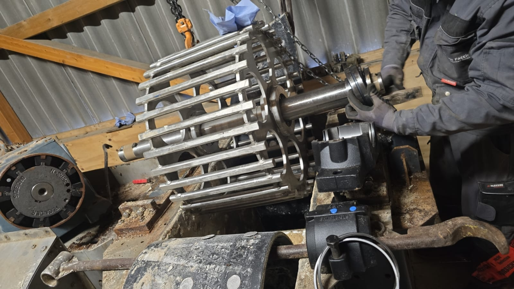
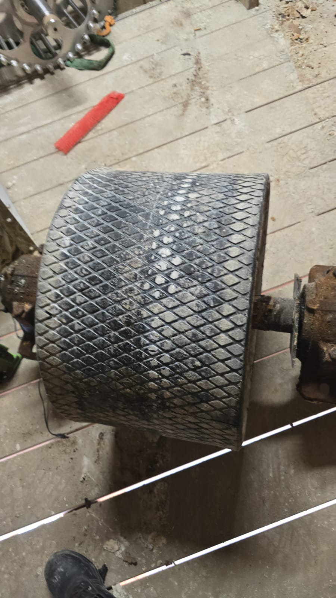
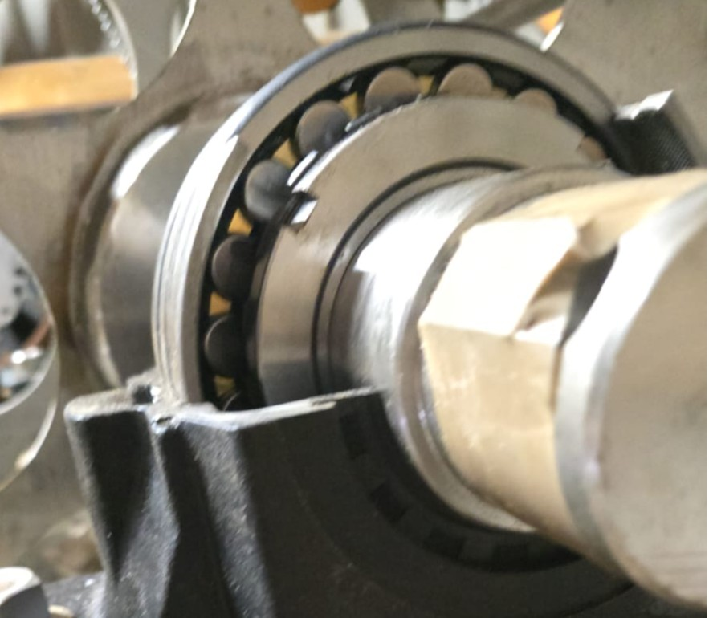

Lucian Borz Servizzi provides professional industrial welding, locksmithing, metal fabrication and mechanical maintenance services for factories, mills, silos, grain processing plants and industrial facilities.
We are available for industrial projects worldwide, offering reliable, practical and durable solutions for companies that need serious technical support.
Our mission is to support industrial companies with professional, reliable and efficient technical services. We focus on reducing downtime, repairing equipment correctly and delivering long-lasting metal and mechanical solutions.
Complete overhaul and bearing replacement of industrial roller assemblies for grain processing equipment.
Mechanical maintenance, shaft alignment, bearing installation, roller refurbishment and industrial equipment repair.



Relocation and installation of five industrial presses using crane-assisted lifting operations.
Phone (Germany): +49 173 8538316
Email: office.lucianborzservizzi@gmail.com
Available for Industrial Projects Worldwide
Contact Us on WhatsApp